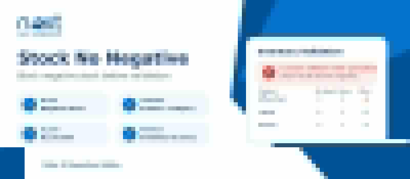
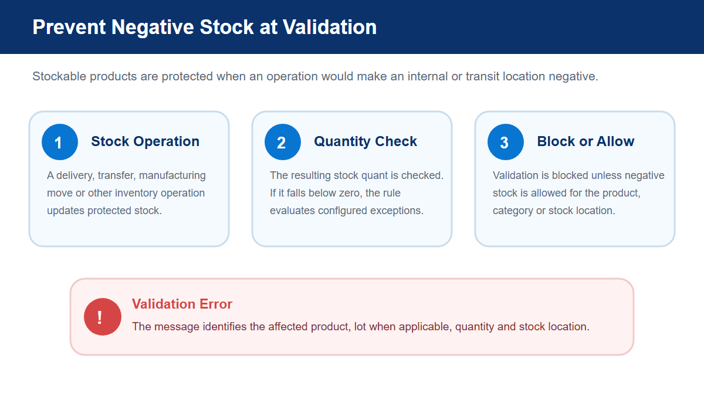
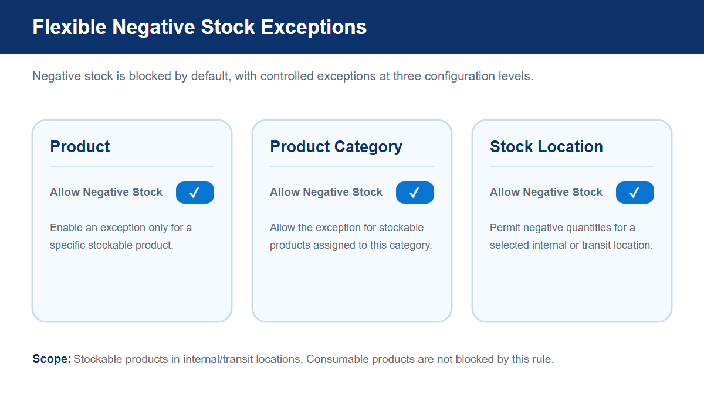
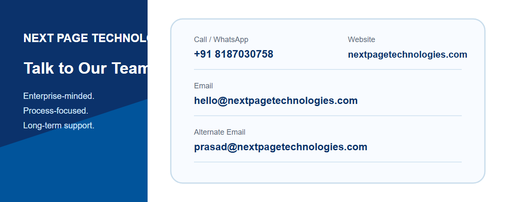

Prevent negative stock in Odoo 18 Inventory by blocking operations that would take a stockable product below zero in an internal or transit location. Keep inventory quantities reliable while allowing controlled exceptions for selected products, product categories, or stock locations.
Stock No Negative adds a validation constraint to Odoo stock quantities. When an inventory operation would create a negative quantity, the addon evaluates the product, its directly assigned category, and the affected stock location before either blocking or allowing the update. No global configuration is required after installation.
Prevent protected stockable products from falling below zero in internal and transit locations.
Identify the affected product, negative quantity, location, and lot when lot tracking applies.
Permit negative stock for a specific product or for products assigned directly to a selected category.
Allow negative quantities in selected internal or transit locations when a process requires them.
Protection is active by default for stockable products in internal and transit locations. When an exception is needed, enable Allow Negative Stock on the product, its product category, or the stock location. A category exception applies to products assigned directly to that category; it does not automatically apply to subcategories.
When a protected stock quant falls below zero, Odoo stops the operation with a validation error. The message gives users the operational details needed to correct the quantity or review the relevant exception setting.

Keep the inventory safeguard in place while granting targeted exceptions at product, directly assigned product category, or stock location level. An enabled exception at any one of these levels allows the relevant negative stock quantity.

stock)Contact Next Page Technologies Pvt Ltd for implementation or support assistance.

Published and supported by Next Page Technologies Pvt Ltd.
Website: https://nextpagetechnologies.com
This Odoo 18 distribution is based on the OCA stock_no_negative module, originally authored by Akretion and maintained through the Odoo Community Association ecosystem. It remains licensed under AGPL-3.